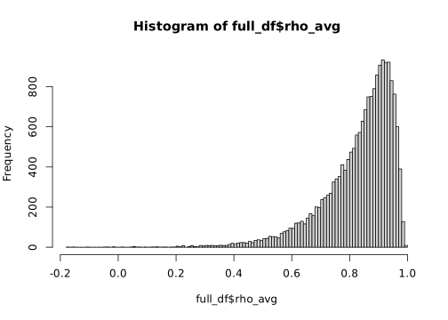
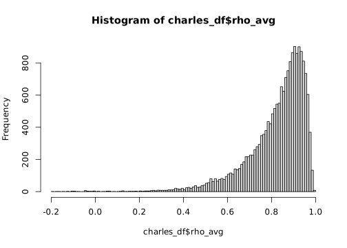
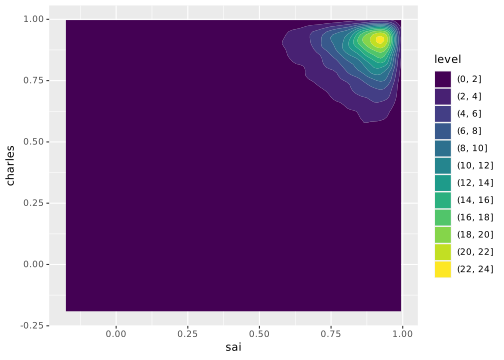

Code
library(dplyr)
library(glue)
library(tidyverse)library(dplyr)
library(glue)
library(tidyverse)path_to_predictdb_summaries <- "/beagle3/haky/users/saideep/projects/aracena_modeling/linearization/predixcan/models/summary"
s_files <- list.files(path_to_predictdb_summaries)
s_dfs <- list()
for (s_file in s_files) {
s_dfs[[s_file]] <- read_delim(glue("{path_to_predictdb_summaries}/{s_file}"), delim = "\t")
}
full_df <- bind_rows(s_dfs)hist(full_df$rho_avg, breaks = 100)
charles_linearize_sum_path <- "/beagle3/haky/users/charles/project/singleXcanDL/PredicDB/Corrected_T2D_Geuvadis/work_dir/results/database/Model_summary.txt"
charles_df <- read_delim(charles_linearize_sum_path, delim = "\t")
hist(charles_df$rho_avg, breaks = 100)
full_df_reorder <- full_df %>%
arrange(gene_id)
charles_df_reorder <- charles_df %>%
arrange(gene)full_df_reorder# A tibble: 18,714 × 24
gene_id gene_name gene_type alpha n_snps_in_window n_snps_in_model
<chr> <chr> <chr> <dbl> <dbl> <dbl>
1 ENSG00000000419 DPM1 protein_cod… 0.5 2915 88
2 ENSG00000000457 SCYL3 protein_cod… 0.5 2760 209
3 ENSG00000000460 C1orf112 protein_cod… 0.5 2731 192
4 ENSG00000000938 FGR protein_cod… 0.5 1139 97
5 ENSG00000000971 CFH protein_cod… 0.5 1598 37
6 ENSG00000001036 FUCA2 protein_cod… 0.5 2255 169
7 ENSG00000001084 GCLC protein_cod… 0.5 2861 152
8 ENSG00000001167 NFYA protein_cod… 0.5 3285 171
9 ENSG00000001460 STPG1 protein_cod… 0.5 2324 182
10 ENSG00000001461 NIPAL3 protein_cod… 0.5 2293 99
# ℹ 18,704 more rows
# ℹ 18 more variables: lambda_min_mse <dbl>, test_R2_avg <dbl>,
# test_R2_sd <dbl>, cv_R2_avg <dbl>, cv_R2_sd <dbl>, in_sample_R2 <dbl>,
# nested_cv_fisher_pval <dbl>, rho_avg <dbl>, rho_se <dbl>, rho_zscore <dbl>,
# rho_avg_squared <dbl>, zscore_pval <dbl>, cv_rho_avg <dbl>,
# cv_rho_se <dbl>, cv_rho_avg_squared <dbl>, cv_zscore_est <dbl>,
# cv_zscore_pval <dbl>, cv_pval_est <dbl>charles_df_reorder# A tibble: 18,714 × 24
gene gene_name gene_type alpha n_snps_in_window n_snps_in_model
<chr> <chr> <chr> <dbl> <dbl> <dbl>
1 ENSG00000000419 DPM1 protein_cod… 0.5 2915 96
2 ENSG00000000457 SCYL3 protein_cod… 0.5 2760 292
3 ENSG00000000460 C1orf112 protein_cod… 0.5 2731 159
4 ENSG00000000938 FGR protein_cod… 0.5 1139 131
5 ENSG00000000971 CFH protein_cod… 0.5 1598 52
6 ENSG00000001036 FUCA2 protein_cod… 0.5 2255 155
7 ENSG00000001084 GCLC protein_cod… 0.5 2860 139
8 ENSG00000001167 NFYA protein_cod… 0.5 3285 199
9 ENSG00000001460 STPG1 protein_cod… 0.5 2324 141
10 ENSG00000001461 NIPAL3 protein_cod… 0.5 2293 264
# ℹ 18,704 more rows
# ℹ 18 more variables: lambda_min_mse <dbl>, test_R2_avg <dbl>,
# test_R2_sd <dbl>, cv_R2_avg <dbl>, cv_R2_sd <dbl>, in_sample_R2 <dbl>,
# nested_cv_fisher_pval <dbl>, rho_avg <dbl>, rho_se <dbl>, rho_zscore <dbl>,
# rho_avg_squared <dbl>, zscore_pval <dbl>, cv_rho_avg <dbl>,
# cv_rho_se <dbl>, cv_rho_avg_squared <dbl>, cv_zscore_est <dbl>,
# cv_zscore_pval <dbl>, cv_pval_est <dbl>plot(full_df_reorder$rho_avg, charles_df_reorder$rho_avg)
rho_df <- data.frame(sai=full_df_reorder$rho_avg, charles=charles_df_reorder$rho_avg)library(ggplot2)
ggplot(rho_df) + geom_density_2d_filled(aes(x=sai, y=charles))